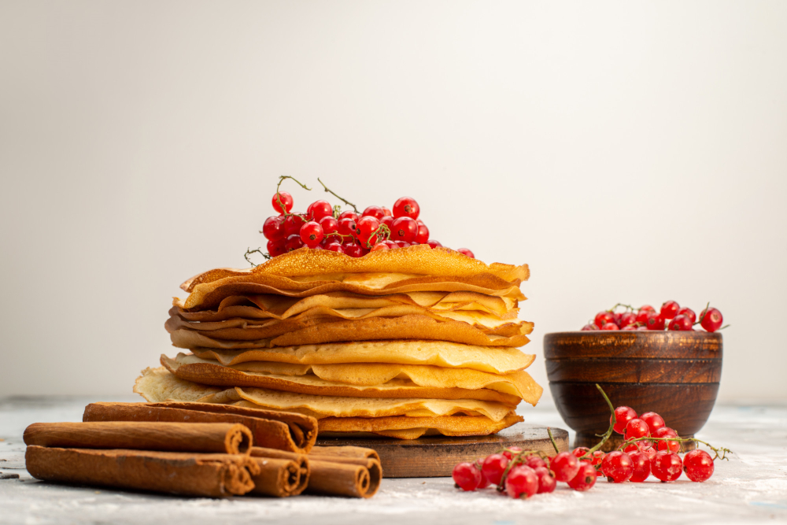

Blini
Image from KamranAydinov on Freepik
Description
Thin pancakes with milk are an English version of traditional fluffy Russian pancakes baked with yeast.
In Europe, pancakes look like thin, almost transparent napkins.
In France, they are called "crepes" and are served with a hundred different fillings.
There are no special tricks in cooking: the more liquid the dough, the thinner the pancakes are.
Before pouring the first pancake, you should heat the frying pan well.
The pancake is ready when it begins to brown to crispy edges.
Ingredients
Servings: 4
- 2 tablespoons of sugar
- 5 chicken eggs
- 3 pinches of salt
- 2 tablespoons of vegetable oil
- 1 liter of milk
- 400 grams of wheat flour
Steps
- Beat eggs with sugar.
- Gradually add flour and salt, alternating with milk, and stir gently until the mixture is smooth.
- Leave the mixture for 20 minutes.
- Add vegetable oil to the dough and fry the pancakes in a very hot frying pan by pouring some dough on a pan.
Try to distribute it evenly on a pan surface by tilting a pan.